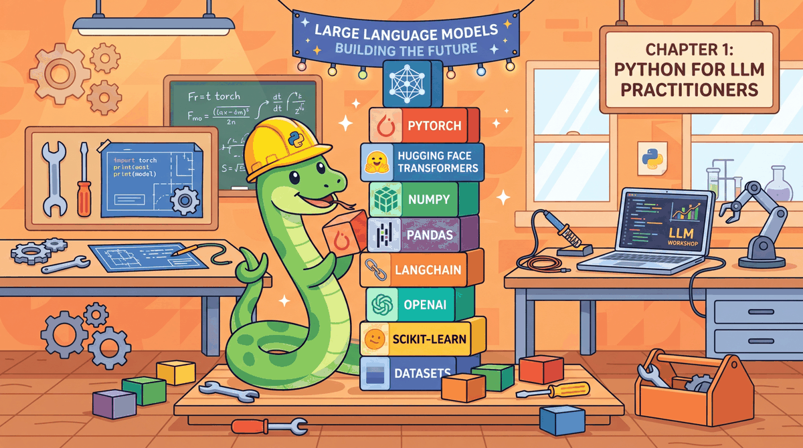

This appendix introduces the Python ecosystem for LLM work. It is not a Python tutorial; it assumes you can write functions, use loops, and install packages. Instead, it focuses on the specific libraries, patterns, and tools that LLM practitioners rely on daily: the core stack (PyTorch, NumPy, Pandas), the LLM-specific layer (Transformers, tokenizers, OpenAI and Anthropic SDKs), environment management, and scripting patterns for batched inference, streaming, and async calls.
Python fluency in LLM contexts means more than syntax: it means knowing which library handles which concern, how to structure a project so experiments are repeatable, and how to avoid common pitfalls like tokenizer mismatches, memory leaks from gradients accumulating in inference loops, or API rate limiting in batch jobs. These are the skills that separate working code from production-grade code.
This appendix serves readers who have Python experience from other domains (web development, data science, scripting) but have not yet worked in the deep learning or LLM space. It also serves as a cheat sheet for experienced practitioners who want a condensed reference.
The libraries covered here are used throughout the book, with the heaviest usage in Chapter 10 (LLM APIs) and Chapter 11 (Prompt Engineering). Fine-tuning workflows in Chapter 14 rely on the environment and dependency patterns introduced here. For the HuggingFace-specific layer on top of these foundations, see Appendix K (HuggingFace Ecosystem).
Working Python knowledge is required: functions, classes, list comprehensions, and pip or conda for package installation. If you need a Python introduction, consult an external resource before this appendix. For setting up the actual Python environment with CUDA and ML libraries, see Appendix D (Environment Setup), which pairs closely with this one.
Read Section C.1 and C.2 before starting any hands-on chapter if you are new to the ML Python ecosystem. Return to Section C.4 when writing production LLM scripts to check patterns for error handling, retries, and streaming. If you are experienced with PyTorch and the HuggingFace stack, you can skip this appendix entirely or use it as a reference when specific library usage is unclear. For version control and experiment tracking on top of this Python foundation, see Appendix E (Git and Collaboration).